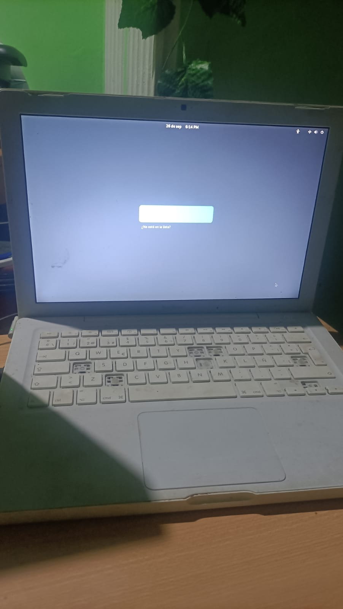

Mi Viaje: De la Adversidad a la Pasión por la Tecnología
En XxAlitokerxX Mi Cueva Digital, quiero compartir contigo el increíble viaje que me llevó a este proyecto. Mi historia es un testimonio de determinación, superación y amor por la tecnología.
Todo comenzó con un sueño: ser informático. Sin embargo, la vida me condujo por caminos inesperados. Conocí a mi pareja y comenzamos una nueva vida juntos, formando una familia que incluía a sus hijos que ahora son como mios o mas con todo mi cariño y mi amor hacia ellos son lla mas de 6 años juntos al momento de publicar este testimonio. Las circunstancias laborales me llevaron a un período de desempleo, y me encontré haciendo cosas que nunca había imaginado, como recolectar chatarra y ofrecer servicios de transporte y retiro de objetos.
Luego, el mundo se vio afectado por la pandemia de COVID-19 en 2019, lo que complicó aún más nuestras vidas. Para mantener a mi familia, me vi obligado a pedir limosna y alimentos, ya que no podía trabajar debido al confinamiento. Fueron años difíciles y desafiantes que no desearía a nadie.
Con el tiempo, la suerte comenzó a sonreírnos y conseguimos una vivienda en Moreras (Las Margaritas) en Córdoba, donde experimentamos un año de trabajo estable y una economía en crecimiento. Sin embargo, como suele suceder, lo bueno no duró mucho y el trabajo comenzó a escasear nuevamente.
Además de mis esfuerzos por mantener a mi familia, trabajé durante un tiempo para una familia de rumanos en su campamento. Mi tarea consistía en desmantelar motores de refrigeradores y aires acondicionados. En mi interior, luchaba con la incoherencia de ver cómo organizaciones y las administraciones brindaban ayuda a ese colectivo, lo cual no me parecía mal, pero al mismo tiempo, yo no recibía ayuda y era utilizado como trabajador que yo les agradesco puesto que gracias a ellos podia poner un plato en la mesa todos los dias.
En medio de esta agitada vida, mi suegra me entregó un antiguo ordenador portátil, desgastado y con teclas faltantes. A pesar de su estado, esto despertó mi ilusión y creí que podría ponerlo en funcionamiento. Instalé un sistema operativo Linux y lo hice funcionar. Fue el punto de partida de este proyecto.
El hallazgo del portátil me inspiró a buscar más computadoras desechadas, y ahora poseo tres torres y cuatro portátiles. aunque un poco viejos Cada uno de ellos es un tesoro en mi búsqueda por aprender y compartir conocimientos en el mundo digital.
La desesperada situación en la que me encontraba despertó en mí la idea de crear una página web y contenido en TikTok. Me convertí en autodidacta, superando numerosos desafíos con pasión y determinación. Cada línea de código, cada video editado y cada artículo publicado son testimonios de mi amor por la tecnología y mi deseo inquebrantable de mejorar y crecer.
Espero que mi esfuerzo y trabajo sean valorados algún día, y que yo y otros como yo tengamos oportunidades que antes nos fueron negadas. Mi objetivo es demostrar que, incluso en las circunstancias más adversas, la pasión y la perseverancia pueden abrir puertas y crear un futuro brillante.
Si estás leyendo esto, quiero que te sientas inspirado. Si tienes un sueño o una idea, lucha por ella, paso a paso. Verás cómo el esfuerzo te llevará a lograr cada vez más. Si te ha conmovido mi historia, comparte y sígueme en TikTok. Si puedes, colabora conmigo. Juntos, podemos alcanzar grandes metas y conquistar el mundo.
Únete a Nuestra Comunidad: Transforma Sueños en Realidad. Tu Apoyo, Comentarios y Donaciones Hacen la Diferencia